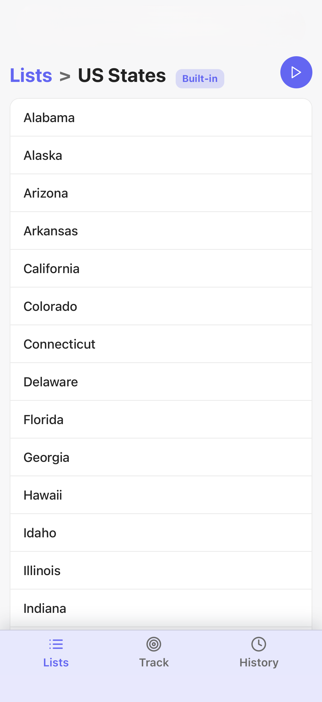
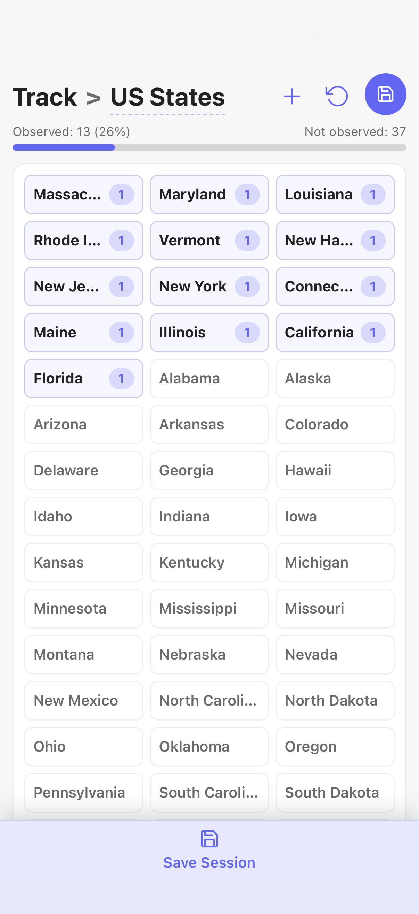
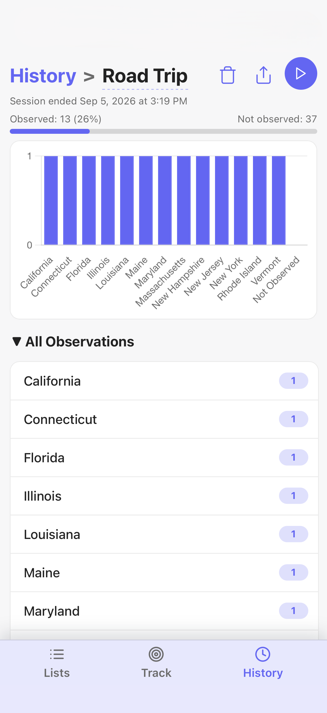

Start with a list
Use a built-in list or make one for the thing you want to notice next.

Observe the ordinary
Loglist turns any list into a quick observation tracker. Spot a license plate, bird, landmark, or anything else, then record it with a single tap.
Highlights
Use a built-in list or make one for the thing you want to notice next.

Focused, immediate controls keep observations out of your head and in the moment.

Save individual sessions and revisit exactly what made an outing memorable.

FAQ
Start with a built-in list or create a custom one. Custom lists can be renamed, duplicated, and updated with your own items.
Choose a list, start a session, then tap an item each time you spot it. Save the session when you are ready to keep a record.
Use the in-app undo control to remove a recent observation. Loglist keeps a history of your last ten observations for quick corrections.
Yes. Loglist is designed to work offline, so you can track observations anywhere without an account or connection.
Support
If you run into a problem, please start by checking the FAQ above. If you still need help, please email me with a description of the issue and your device details.
Email supportGitHub
Check out the app's source code on GitHub. Submit issues if you find a bug or have a feature request.
View repositoryI'm Abby Skofield, a Massachusetts-based software engineer. If you'd like to connect professionally, find me on LinkedIn.
Connect on LinkedInPrivacy policy
Loglist does not collect, share, or sell personal information. Lists and sessions are stored locally on your device. There are no accounts, analytics, or third-party tracking services. For privacy questions, contact abbyskocodes@gmail.com.
Effective date: September 5, 2026. If this policy changes, the effective date will be updated.